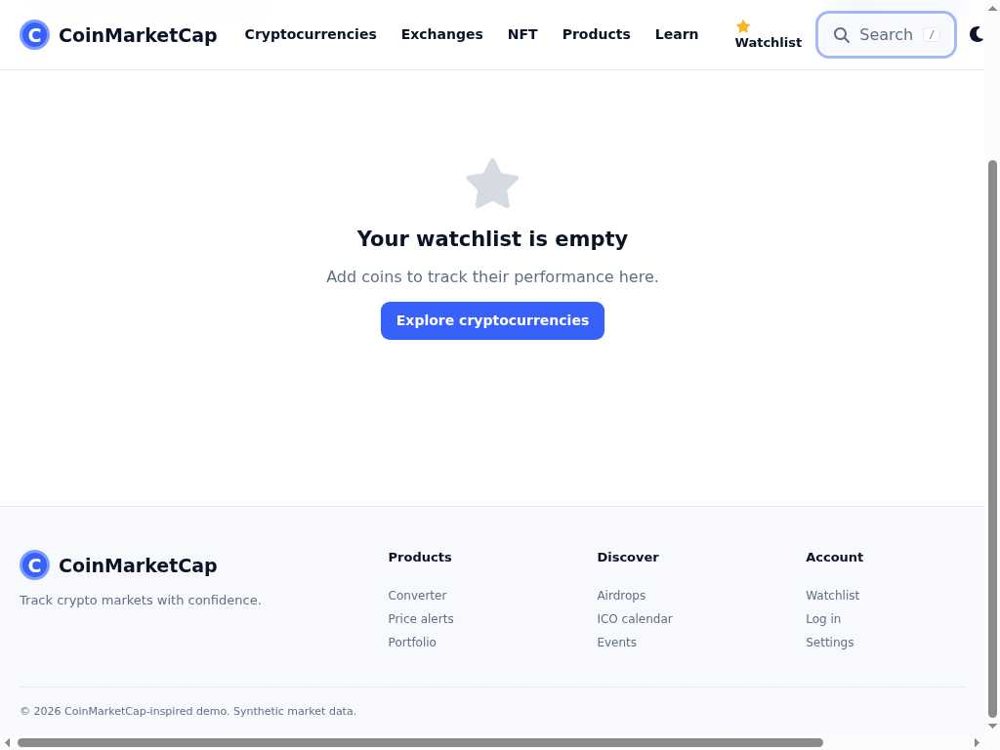

Expected
Return to Search
Focus returns to the exact button that opened the search dialog.
CoinMarketCap · modal focus return
Escape closes search. The exact Search button is still eligible, but
focus settles on BODY.
Temporal contract
G(bound_modal_escape_closes(d,i) -> F_[0,500ms] focus_is_exact_invoker(i))
always(() =>
m1ExactInvokerReturnContractHolds(
m1FocusReturnObservation.current));One screenshot at a time
Focus boxes in s0 and s1 come from the recorded event rectangles.

The exact Search button is captured as the modal invoker.
Expected
Focus returns to the exact button that opened the search dialog.
Observed
The next Tab restarts at “Skip to main content,” not the Search button.
Mentor check
Stored only in this browser.